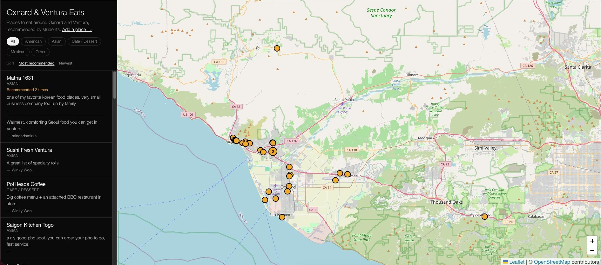

Tools for Students and Lecture
In brief
- In September 2026 I began sending automatic comments on CHEM V101 lab quizzes, and have kept doing so since.
- After a quiz is graded, a script built with the agent puts together the explanations for the letters a student chose and posts them, with the graded scan, as a comment on that student's submission.
- I put a timer on the projector whenever the class is working against time, such as a quiz or fifteen minutes on a practice set.
- By the afternoon of October 21 the map held thirty places, twenty-nine of them recommended by students.
- The next step is to keep trying ideas I would once have set aside, and to check each one before it reaches a student, as I did with the simulations.
Each line is quoted word for word from the full text of this page. In context opens the full text at that sentence.
The thirty-five simulations for CHEM V101 have a page of their own, CHEM V101 Interactive Simulations, which also describes how they were built.
Comments matched to wrong answers on lab quizzes
In September 2026 I began sending automatic comments on CHEM V101 lab quizzes, and have kept doing so since. Each wrong choice on a multiple-choice question has an explanation written in advance. After a quiz is graded, a script built with the agent puts together the explanations for the letters a student chose and posts them, with the graded scan, as a comment on that student's submission. It works when a quiz is entirely multiple choice; free-response work is still graded by hand.
A classroom clock and timer
Once the simulations were working, I wondered whether I could make a clock as well. I put a timer on the projector whenever the class is working against time, such as a quiz or fifteen minutes on a practice set. The free clock site I had been using had filled with advertising, which is a distraction in front of a class during a quiz. So I made my own (tools.rubyeye19.com/clock). It is a single HTML file with no external dependencies, a clock and a countdown timer readable from the back of the room. Because nothing loads from outside, it keeps working if the network drops mid-class.


The same site also holds a map of places to eat around Oxnard and Ventura (tools.rubyeye19.com/eats). In October 2026 I put it in the orientation module of my three Canvas courses and asked students to recommend places they like. A recommendation comes in through a form, and I review it before it goes on the map. Students recommended nine different places in the first two days. On October 20, 2026 I put the map on the projector during lecture and students talked through which of the places they would recommend. By the afternoon of October 21 the map held thirty places, twenty-nine of them recommended by students.

Next steps
Until now I have brought AI into my work in the same order each time, starting from something that was missing and then finding a tool to fill it, as with keeping track of what I had promised students or posting the same class summary to two Canvas shells. That order made sense while I understood my own work far better than I understood the tools, and adopting a tool I neither needed nor understood would have been a risk.
My understanding of the tools has since caught up with my understanding of the work, so I can start from an idea as well as from a problem. The simulations are one example. They started from something I wanted, which was to give students a wider range of things to try and practice, and having them inside Canvas would make my hybrid section more fully a hybrid course. Building them would have been far out of reach if AI were not writing the code, and once it was, it became a matter of deciding to try.
The next step is to keep trying ideas I would once have set aside, and to check each one before it reaches a student, as I did with the simulations.